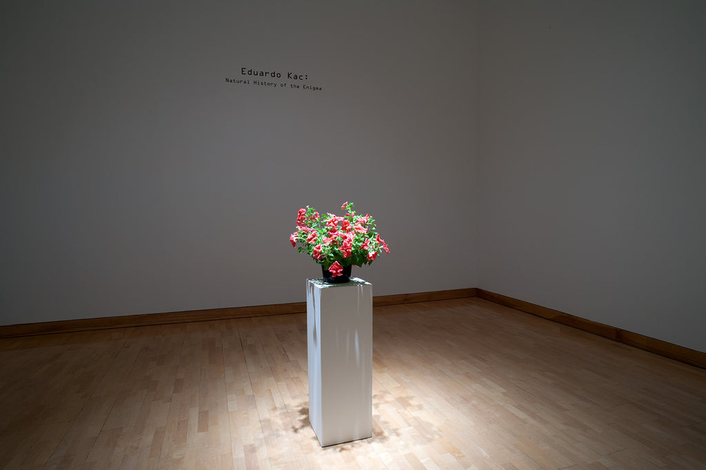
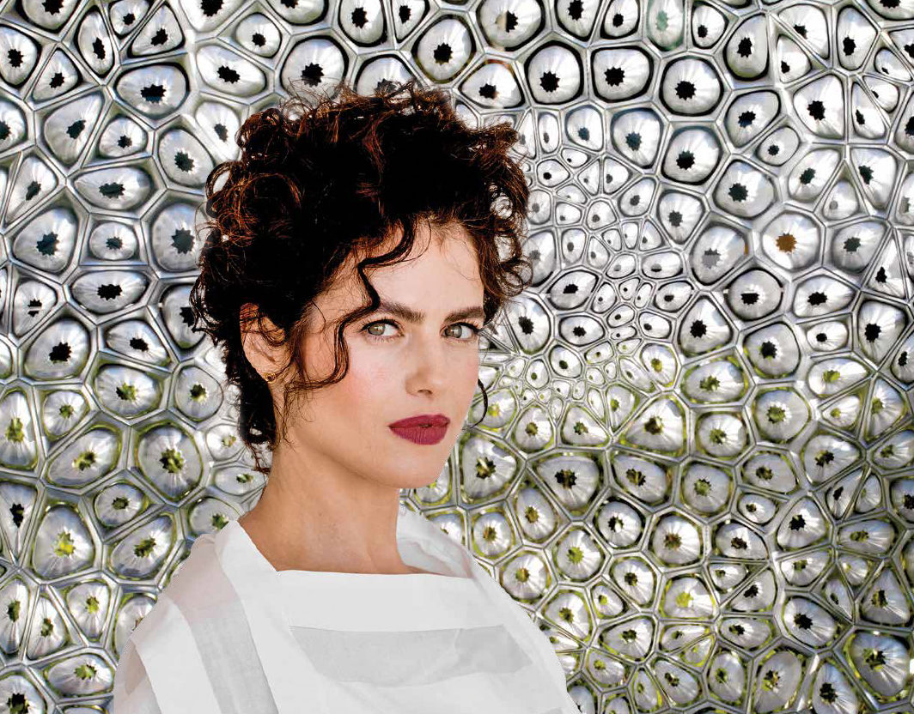

Integrantes: Pilar Herrera, Camila Naylor, Valentina Sarrat, Jose Tomás Escobar, Martina Bidegain y Sofía Arriagada
El Bioarte es una práctica de arte donde los artistas usan organismos vivos, (bacterias, tejidos, procesos biológicos), como su medio para crear piezas de arte. A menudo reflexiona sobre temas éticos, sociales, y estéticos, generando preguntas sobre la vida, la ciencia y la tecnología. Este arte emerge a finales del siglo XX e involucra trabajo en laboratorios o estudios para crear piezas que provoquen reflexiones en el impacto de la biotecnología en la sociedad y la naturaleza. El bioarte no siempre busca soluciones prácticas, busca generar conciencia sobre los problemas biotecnológicos.
El Biodesign usa los mismos principios que el bioarte para crear productos funcionales y sistemas, como en la moda, textiles, muebles, y arquitectura. Va más allá de imitar la naturaleza, busca incorporar componentes vivos a los materiales o partes funcionales en el diseño, con el objetivo de crear diseños más sustentables.
Neri Oxman es una diseñadora, arquitecta, inventora, y ex profesora conocida por ser una pionera en el área de Ecología Material, la cual integra las disciplinas de biología, diseño, diseño computacional, ciencia de materiales, y fabricación digital. Ella fundó el grupo “Mediated Matter” en la universidad MIT el 2010, donde desarrolló diseños innovadores inspirados por la naturaleza y la sustentabilidad ecológica.
Su trabajo se caracteriza por usar sistemas vivos y tecnologías digitales para crear nuevos materiales y estructuras. Ha recibido varios reconocimientos por su trabajo, como el Cooper Hewitt National Design Award y el SFMOMA Contemporary Vision Award, también algunas de sus obras están expuestas en el museo MOMA y el Centro Pompidou.
Silk Pavilion es una instalación arquitectónica que explora la colaboración entre humanos, robots, y gusanos de seda para crear una estructura de seda. El proyecto comenzó con un brazo robótico que estaba programado para imitar como un gusano de seda crea la seda, colocando aproximadamente un kilómetro de fibra de seda sobre marcos metálicos poligonales para formar 26 paneles. Estos paneles luego fueron ensamblados en un domo desde el techo.
Después de que se creó el marco robótico, 6,500 gusanos de seda fueron liberados dentro de esta estructura para que hicieran seda, llenando los huecos y completando el pavilion. El comportamiento de los gusanos fue influenciado por factores ambientales como la temperatura y la luz, lo que afectó la densidad de la seda que producen, resultando en una figura arquitectónica crecida biológicamente.
Algunos de los principios de los nuevos medios de Lev Manovich que aborda el proyecto son:
Este proyecto involucra diseño digital y fabricación robótica, donde la forma de la estructura está programada y controlada por data numérica y algoritmos, incorporando medios como código numérico programable
El pavilion está compuesto por 26 paneles individuales de seda creados por un brazo robótico antes de ser ensamblados a un domo entero, reflejando una construcción modular, donde las partes pueden ser creadas independientemente y combinadas.
El brazo robótico automatiza el proceso inicial de colocar la seda, usando algoritmos para imitar el comportamiento de los gusanos de seda, lo que demuestra la producción automatizada de elementos multimedia.
Donde la forma final no es completamente controlada por una sola entidad, sino que emerge del diálogo entre programación, comportamiento biológico y condiciones del entorno. Esta lógica descentraliza la autoría y plantea una nueva forma de hacer diseño: más abierta, compartida e impredecible.
Propone una nueva forma de construir, abriendo una categoría de materiales híbridos dónde lo vivo no es solo un símbolo, sino una parte activa del proceso constructivo. Esto abre posibilidades hacia una fabricación de bajo impacto ambiental.
Capaz de guiar procesos sin imponerlos. En este tipo de diseño, la inteligencia no solo está en el algoritmo, sino también en los organismos y su entorno, generando resultados que son imposibles de prever completamente desde lo humano.